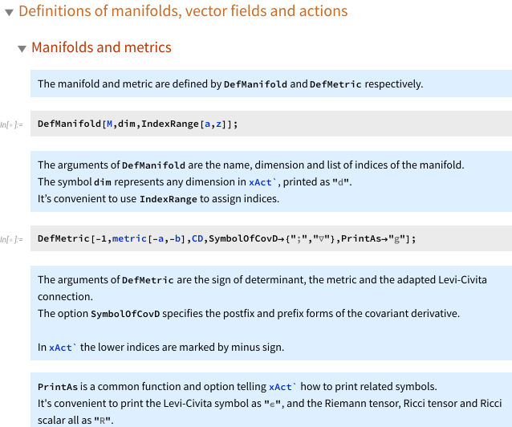

Introduction to xAct packages I
Introduction to xAct packages I Equations of motion and stress tensors
\(\newcommand{\fourpst}{4\partial \text{ST}}\) References:
Materials:
-
xact-eom-and-emt.nb - main notebook
-
lily.nb - stylesheet, which can be put in the path:
FileNameJoin@{$UserBaseDirectory,"SystemFiles","FrontEnd","StyleSheets"}
Introduction
In this page we introduce by examples the abstract tensor computation functionality of the xAct packages, and we illustrate how to derive equations of motions and simplify tensor expressions in the following listed theories.
| Theory | Action |
|---|---|
| free scalar | \(S_{\text{f.s.}}=\frac{1}{2}\int\,{d^{d}x}\sqrt{-g}\,\partial^{a}\phi \partial_{a}\phi\) |
| conformal scalar | \(S_{\text{c.s.}}=\frac{1}{2}\int\,{d^{d}x}\sqrt{-g}\,( \partial^{a}\phi \partial_{a}\phi + c R \phi^2)\) |
| abelian gauge field | \(S_{U(1)}=\frac{1}{4}\int\,{d^{d}x}\sqrt{-g}\,F_{ab}F^{ab}\) |
| four-derivative scalar-tensor (\(\fourpst\)) | \(S_{\fourpst}=\frac{1}{4}\int\,{d^{d}x}\sqrt{-g}\,\a(\f) (\partial^{a}\phi \partial_{a}\phi)^2\) |
The traces \(\tr T\) of stress tensors \(T_{ab}=\frac{2}{\sqrt{-g}} \frac{\delta S}{\delta g^{ab}}\) of these four theories vanish at special dimensions and parameters, and in that cases the actions are invariant under the Weyl transformations.
| Theory | Trace of stress tensor | Condition of Weyl-invariance |
|---|---|---|
| free scalar | $\tfrac{1}{2} (-2 + d) \nabla_{a}\phi \nabla^{a}\phi $ | \(d=2\) |
| conformal scalar | \(\tfrac{1}{2} (-2 + d) \phi \operatorname{EOM}(\f)\) at \(c= - \frac{2 - d}{4 (-1 + d)}\) | \(d=2\) or \(c= - \frac{2 - d}{4 (-1 + d)}\) |
| abelian gauge | \(\tfrac{1}{4} (-4 + d) F_{ab} F^{ab}\) | \(d=4\) |
| \(\fourpst\) | $\tfrac{1}{4} (-4 + d) \alpha (\phi) \nabla_{a}\phi \nabla^{a}\phi \nabla_{b}\phi \nabla^{b}\phi $ | \(d=4\) |
Notice that: 1) only in \(d=4\) the free abelian gauge field is conformally invariant; 2) due to the non-minimally coupled term \(R \phi^2\), the conformal scalar is better behaved than the free scalar on curved manifold. see e.g. 3 4 5 6 7 8。
The variational calculus in this page is purely symbolic: there is no need to specify the global topology of the underlying manifold and the function space1 of the field configurations. The only information involved is a local coordinate chart with some differential structures like metric and complex structure, and the local chart can be open subset of smooth manifold or supermanifold, or even from some formal geometry2.
At the low-level of computation, the variational calculus is to manipulate expressions according to a list of rules like Leibniz rule and IBP, to reduce the complexity of expressions step by step and finally approach to the target expression. The xAct packages provide a rather complete platform of this functionality.
The structure of the notebook
The main content is in this notebook - xact-eom-and-emt.nb written in the following style:

In the notebook there are four sections to introduce useful functions in the xAct packages:
-
Packages and pre-defined functions
ToCanonical, ContractMetric, Simplification- simplifying abstract tensorial expressions
-
Definitions of manifolds, vector fields and actions
-
DefManifold, DefMetric, DefCovD, PD- defining manifolds, metrics and connections -
DefTensor, DefConstantSymbol, DefScalarFunction- defining vector fields, constants and scalar functions of fields -
MakeRule- defining relations between fields -
Scalar, Monomial- implementing functions on scalars correctly
-
-
Equations of motion and stress tensors
VarD- variation and IBP
-
Making ansatz
MakeContractionAnsatz, SolveConstants- making tensorial ansatz and compare the coefficients
The following useful functionalities are not covered and can be found in the official documentation:
-
Validate- checking xAct syntax like index balancing -
CommuteCovDs, SortCovDs- sorting successive covariant derivatives with the commutators -
StrongGenSet, Symmetric- tensor symmetry -
delta, Gdelta- generalized delta tensor -
Dagger, DaggerIndex- complex vector bundle -
LieD, LieDToCovD, Bracket- Lie derivative
Some further explanations
Function xAct`xPert`Perturbation
扩展包 xPert 提供了变分与度规微扰的相关函数。变分函数 Perturbation 内置了变分满足的线性性和 Leibniz 规则，例如 Perturbation@A[-a] 便是 \(\delta A_{a}\)，被打印为 \(\triangle[A_{a}]\)，例如对电磁场作用量的变分为
action[abelianGauge]//Perturbation
对作用量中的三个因子的分别变分，展开给出三项，
被变分的基本场为规范势 \(A\) 而非场强 \(F\)，因此利用规则 ruleFToA 展开 \(F\)，
action@A/.ruleFToA//tensorSim//Perturbation
注意 \(\delta A^{a}\) 隐含度规缩并 \(\delta(A_{b}g^{ab})=\delta A_{b} g^{ab}+A_{b}\delta g^{ab}\)。需要将 \(\delta L\) 展开成 \((\dots )\delta g+(\dots )\delta A_{a}\) 的形式，\(\delta A_{a}\) 的系数给出场方程，\(\delta g\) 的系数给出能动张量，括号中含有关于变分的协变导数，需要通过分部积分来消除。
基于 Perturbation，函数 VarD[#1,#2] 提供了抽取系数以及分部积分的功能，其中第一个自变量表示变分场，第二个自变量表示关于协变导数 CD 进行分部积分。
-
In most cases the field configurations are assumed to be compactly supported or fast decayed at infinity, ensuring that the integral in the action \(S\) is algebraic, aka, is a linear map from field configurations to \(\C\), \(\mathbb{C}[[\hbar,m,g,\dots ]]\) or even some peculiar rings. ↩
-
see e.g. variational bi-complex, formal geometry and BV-BRST. ↩
-
Joseph Polchinski. Scale and Conformal Invariance in Quantum Field Theory. Nucl. Phys. B, 303:226–236, 1988. doi:10.1016/0550-3213(88)90179-4. ↩
-
R. Jackiw and S. -Y. Pi. Tutorial on Scale and Conformal Symmetries in Diverse Dimensions. J. Phys. A, 44:223001, 2011. arXiv:1101.4886, doi:10.1088/1751-8113/44/22/223001. ↩
-
Sheer El-Showk, Yu Nakayama, and Slava Rychkov. What Maxwell Theory in D≠4 teaches us about scale and conformal invariance. Nucl. Phys. B, 848:578–593, 2011. arXiv:1101.5385, doi:10.1016/j.nuclphysb.2011.03.008. ↩
-
Yu Nakayama. Scale invariance vs conformal invariance. Phys. Rept., 569:1–93, 2015. arXiv:1302.0884, doi:10.1016/j.physrep.2014.12.003. ↩
-
Markus A. Luty, Joseph Polchinski, and Riccardo Rattazzi. The \(a\)-theorem and the Asymptotics of 4D Quantum Field Theory. JHEP, 01:152, 2013. arXiv:1204.5221, doi:10.1007/JHEP01(2013)152. ↩
-
Anatoly Dymarsky, Zohar Komargodski, Adam Schwimmer, and Stefan Theisen. On Scale and Conformal Invariance in Four Dimensions. JHEP, 10:171, 2015. arXiv:1309.2921, doi:10.1007/JHEP10(2015)171. ↩